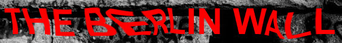
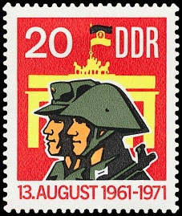
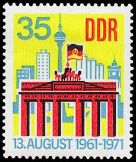
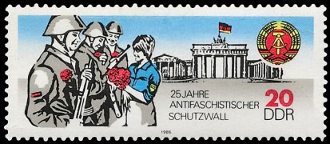
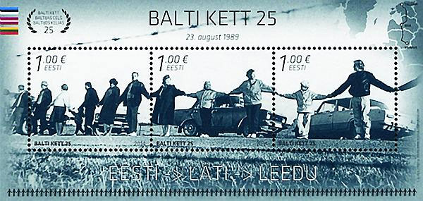
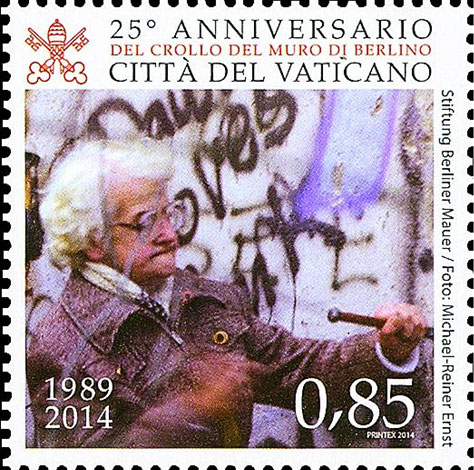

The Berlin Wall (German: Berliner Mauer) was a barrier separating West Berlin from East Berlin and the rest of East Germany. The longer 'inner German border' demarcated the remainder of the East-West German border between the two states. Both borders were part of the Iron Curtain. The East German government constructed the Berlin Wall to stop East Germans from fleeing.
The wall separated East Berlin and West Berlin for 28 years, from the day construction began on August 13, 1961 until it was dismantled in 1989, and was considered to be a longtime symbol of the Iron Curtain. During this period, at least 136 people were confirmed killed trying to cross the Wall into West Berlin, according to official figures. However, a prominent victims' group claims that more than 200 people had been killed trying to flee from East to West Berlin.[2] The GDR/East German government gave shooting orders to border guards dealing with defectors...
On June 15, 1961, two months before the construction of the Berlin Wall started, First Secretary of the Socialist Unity Party and Staatsrat chairman Walter Ulbricht stated in an international press conference, "Niemand hat die Absicht, eine Mauer zu errichten!" (No one has the intention to erect a wall). It was the first time the colloquial term Mauer (wall) had been used in this context.
On Saturday August 12, 1961, the leaders of East Germany attended a garden party at a government guesthouse in Döllnsee, in a wooded area to the north of East Berlin, and Walter Ulbricht signed the order to close the border and erect a Wall.


At midnight the army, police, and units of the East German army began to close the border and by morning on Sunday August 13, 1961 the border to West Berlin had been shut. East German troops and workers had begun to tear up streets running alongside the barrier to make them impassable to most vehicles, and to install barbed wire entanglements and fences along the 156 km (97 miles) around the three western sectors and the 43 km (27 miles) which actually divided West and East Berlin. The Soviets were not directly involved.
The barrier was built slightly inside East German territory to ensure that it did not encroach on West Berlin at any point, and was later built up into the Wall proper, the first concrete elements and large blocks being put in place on August 15. During the construction of the Wall, NVA and KdA soldiers stood in front of it with orders to shoot anyone who attempted to defect. Additionally, the whole length of the border between East and West Germany was closed with chain fences, walls, minefields, and other installations.

The last readily accessible option for travel or emigration to West Germany had been closed for the vast majority of East Germans, and many families were split and East Berliners cut off from their jobs and from chances for financial improvement; West Berlin became an isolated enclave in a hostile land. Source.
The two stamps from the first row of images were issued by the German Democratic Republic (DDR) the 12th of August 1971. They commemorate, with smiles on the faces of the militiamen and the soldier, the 10th anniversary of the erection of the wall, an obvious defeat of the communist regime. Scott 1316-1317.
The stamp on the second row was issued by DDR on the 5th of August 1986 and it commemorates the 25th anniversary of the wall. We see the same smiling faces as 15 years ago but the text is harsher: "25 years of the antifascist protection wall". This implies, of course, that the wall was erected to protect the DDR from the external fascists, a typical socialist propaganda trick. On all these stamps the images in the background show the Brandenburg Gate and some new buildings but not the wall itself. The symbolic stamps of the reunited Germany (1990) display the protesting demonstrators from the DDR in front of the Brandenburg Gate and a big opening in the Wall.
The above miniature sheet was issued by Estonia in 2014. It commemorates the 25 years since the fall of the wall. Other two MSs of the same design were issued by Lithuania and Latvia.

The postal administration of the Vatican City commemorated the same event also in 2014.
On the next page we present the stamps issued worldwide that commemorate the fall of the infamous wall. Click here -> please.
Created: 09/01/08. Revised: 1/10/2024.
Copyright © 2008 - 2024 by Victor Manta, Switzerland/USA.
All rights reserved in all countries.